건축설비기사 (2016-05-08 기출문제)
1과목: 건축일반
1. 지하실을 가진 건축물의 외벽을 따라 파 내려간 공간으로서 채광, 통풍의 확보 등을 목적으로 하는 공간은?
- 탕비실
- EPS 실
- 거버너 실
- 드라이 에어리어(dry area)
(정답률: 84%)

2. 잔향시간은 실내에 일정한 세기의 음을 공급하여 정상 상태가 된 후, 음원을 정지시키고 나서 실내의 평균에너지 밀도가 처음 값에서 얼마 감쇠하는 데 소요되는 시간으로 산정하는가?
- 40dB
- 50dB
- 60dB
- 70dB
(정답률: 93%)
3. 철근콘크리트구조의 철근배근에 관한 설명 중 옳지 않은 것은?
- 단순보의 늑근은 중앙부분보다 단부에 더 많이 넣는 다.
- 단순보의 주근은 중앙부에서 하부에 더 많이 넣는다.
- 띠철근(hoop)의 수직간격은 기둥 단면의 최대 치수 이하로 하여야 한다.
- 캔틸레버 보의 주근은 상부에 배치한다.
(정답률: 67%)
4. 건축계획진행과정에 있어서 세부계획에 속하지 않는 것은?
- 자료수집분석
- 평면계획
- 입면계획
- 구조계획
(정답률: 88%)
5. 채광(採光)설계에 관한 내용 중 옳지 않은 것은?
- 실내천장의 반사율은 벽의 반사율보다 큰 것이 좋다.
- 집안으로 빛을 많이 유입시켜 에너지 효율을 높이려면 큰 창문의 방향을 서쪽으로 한다.
- 눈부신 감을 주는 장소를 없애는 것이 좋다.
- 하루 중 조도의 변동이 적은 것이 좋다.
(정답률: 88%)
6. 사무소건물에 아트리움(atrium)을 도입하는 이유로 옳지 않은 것은?
- 에너지 절약에 유리하다.
- 사무공간에 빛과 식물을 도입하여 자연을 체험하게 한다.
- 보다 넓은 사무공간을 확보할 수 있다.
- 근로자들의 상호교류 및 정보교환의 장소를 제공한다.
(정답률: 89%)
7. 음과 관련된 용어에 대한 설명으로 옳지 않은 것은?
- 음장 : 음파가 전달되는 공간
- 음압 : 음파에 의해 공기진동으로 생기는 대기 중의 변동
- 주파수 : 음이 1초 동안에 왕복하는 진동횟수
- 암소음 : 측정하고자 하는 대상음
(정답률: 82%)
8. 일영계획에 관한 설명 중 옳지 않은 것은?
- 일영은 태양의 방위와 반대방향에 생긴다.
- 일영곡선은 해당 지역의 위도, 시간별 태양고도에 따라 다르다.
- 일영의 길이는 태영의 고도에 의하여 결정된다.
- 일영이 생기는 방향은 계절이 바뀌어도 변함이 없다.
(정답률: 88%)
9. I형강을 절단하여 구멍이 나도록 맞추어 용접한 보의 명칭은?
- 판보
- 래티스보
- 트러스보
- 허니컴보
(정답률: 70%)
10. 계단에서 디딤판 끝에 미끄럼방지용으로 대어주는 철물의 명칭은?
- 코너비드
- 논슬립
- 레지스터
- 테라코타
(정답률: 90%)
11. 아파트 단면 형식 중 복층형(maisonette type)의 장점을 잘못 설명한 것은?
- 거주성과 프라이버시가 양호하다.
- 소규모에 유리한 형식이다.
- 주택 내 공간의 변화가 있다.
- 유효면적이 증가한다.
(정답률: 86%)
12. 종합병원에 관한 설명 중 옳지 않은 것은?
- 연면적에 대해 병동부가 차지하는 면적은 정신병원과 비교했을 때 큰 편이다.
- 외래부는 매일 왕복환자를 취급하는 곳으로 내과, 이비인후과 등으로 구성된다.
- 소요 병상수는 연간 입원환자 수, 평균 입원일수 등의 자료를 활용하여 산출한다.
- 한국의 병원에서 많이 채택하고 있는 외래진료방식은 클로즈드(closed system) 시스템이다.
(정답률: 78%)
13. 건축의 생산수단으로써 사용되는 치수조정(Modular coordination)에 대한 설명으로 옳지 않은 것은?
- 설계 작업이 간단해진다.
- 치수비(比)가 황금비로 되어 다양한 형태가 된다.
- 대량생산이 용이하여 생산비용이 절감된다.
- 공사기간을 단축할 수 있다.
(정답률: 90%)
14. 단열에 관한 설명 중 옳지 않은 것은?
- 일반적으로 열전도율이 작은 재료를 사용하는 것이 단열효과가 있다.
- 공기층은 기밀성이 떨어져도 단열효과에는 영향이 없다.
- 단열재에 수분이 침투하면 단열성이 매우 나빠진다.
- 10cm 공기층을 1개 층 설치하는 것보다 5cm 공기층을 2개 층 설치하는 것이 단열에 유리하다.
(정답률: 88%)
15. 도서관에 관한 설명으로 옳지 않은 것은?
- 자유개가식은 열람자 자신이 직접 책을 꺼내 열람하는 형식이다.
- 통로의 조도를 충분히 유지하여 이용자에게 눈부심 현상이 없는 계획이 요구된다.
- 신문을 열람하는 장소는 많은 사람이 이용하므로 입구 등 복잡한 곳을 피해 독립된 위치에 둔다.
- 서고의 내부는 자연채광보다는 인공조명으로 하고 기계환기설비가 필수적이다.
(정답률: 87%)
16. 다음 천장구조의 단면에서 ㉮부분의 명칭은?
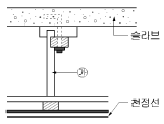
- 달대
- 반자틀받이
- 반자틀
- 달대받이
(정답률: 81%)
17. 사무소의 개방식 배치에 대한 설명으로 옳지 않은 것은?
- 방의 깊이나 길이에 변화를 줄 수 없다.
- 자연채광과 동시에 인공채광이 필요하다.
- 전면적을 유용하게 이용할 수 있다.
- 칸막이벽이 없어서 공사비가 낮다.
(정답률: 85%)
18. 물의 외부보를 제외하고는 내부에는 보 없이 바닥판단으로 구성하고 그 하중은 직접 기둥에 전달하는 구조는?
- 데크플레이트 슬래브
- 2방향 슬래브
- 1방향 슬래브
- 플랫 슬래브
(정답률: 78%)
19. 보강 콘크리트 블록조에서 테두리보를 설치하는 이유로 옳지 않은 것은?
- 가로 철근의 끝 부분을 정착시키기 위하여
- 하중을 균등하게 분포시키기 위하여
- 집중하중을 받는 블록을 보강하기 위하여
- 횡력에 의한 수직균열의 발생을 방지하기 위하여
(정답률: 63%)
20. 상점의 바람직한 대지조건과 가장 관게가 먼 것은?
- 2면 이상 도로에 면하지 않는 곳
- 교통이 편리한 곳
- 같은 종류의 상점이 밀집된 곳
- 사람의 눈에 잘 띄는 곳
(정답률: 85%)
2과목: 위생설비
21. 분수구로부터 높은 압력으로 물을 뿜어내어 세정력은 우수하나 세정음이 크기 때문에 주택이나 호텔 등에서는 바람직하지 않은 대변기는?
- 세출식
- 사이펀식
- 블로아웃식
- 사이펀제트식
(정답률: 56%)
22. 결합통기관에 관한 설명으로 옳은 것은?
- 기구 하나하나마다 설치하는 통기관
- 배수∙통기 양 계통 간의 공기 유통을 원활하게 하기위해 배수수평지관과 루프통기관을 연결시키는 통기관
- 배수수직관의 상부를 그대로 연장하여 대기에 개방되게 한 것으로 배수수직관이 통기관의 역할까지 하도록한 통기관
- 배수수직관의 길이가 길 경우 발생할 수 있는 배수수직관 내의 압력변화를 방지하기 위해 배수수직관과 통기 수직관을 연결한 통기관
(정답률: 80%)
23. 오수처리방법 중 생물막법에 관한 설명으로 옳지 않은 것은?
- 생물학적 처리방법에 속한다.
- 살수여상방식은 쇄석, 플라스틱 여과재가 사용된다.
- 살수여상방식, 회전원판접촉방식, 접촉폭기방식 등이 있다.
- 오니가 폭기조 내부에서 부유하며 오수를 처리하는 방법이다.
(정답률: 68%)
24. 급수기구의 최저 필요압력으로 옳지 않은 것은?
- 샤워기 : 70kPa
- 일반수전 : 30kPa
- 순간온수기 : 20kPa
- 대변기의 세정밸브 : 70kPa
(정답률: 64%)
25. 매시간 15m3의 물을 고가수조에 공급하고자할 때 양수펌프에 요구되는 축동력은? (단, 펌프의 전양정 33m, 펌프의 효율 45%)
- 1kW
- 1.5kW
- 2kW
- 3kW
(정답률: 67%)
26. 급탕방식 중 기수혼합식에 관한 설명으로 옳은 것은?
- 열효율이 90%이다.
- 물을 열원으로 사용한다.
- 공장의 목욕탕 등에 적합하다.
- 소음이 적어 사일렌서를 사용할 필요가 없다.
(정답률: 56%)
27. 펌프의 캐비테이션에 관한 설명으로 옳지 않은 것은?
- 비정상적인 소음과 진동이 발생한다.
- 캐비테이션을 방지하기 위해 펌프의 흡입양정을 크게 한다.
- 캐비테이션이 진행되면 펌프의 양수량, 양정 및 효율이 저하되어 간다.
- 캐비테이션을 방지하기 위해 설계상의 펌프 운전범위내에서 항상 유효 NPSH가 필요 NPSH보다 크게 되도록 배관계획을 한다.
(정답률: 76%)
28. 청소구를 설치하여야 하는 곳이 속하지 않는 것은?
- 수평지관의 최하단부
- 배관길이가 긴 수평배관의 도중
- 배관이 45°이상의 각도로 구부러진 곳
- 가옥배수관과 부지 하수관이 접속되는 곳
(정답률: 57%)
29. 고가탱크방식에서 양수펌프의 양정 산정과 관계없는 것은?
- 양수관의 압력손실
- 시수인입관의 압력
- 고가탱크 설치 높이
- 양수관 토출구의 토출압력
(정답률: 78%)
30. 옥내소화전설비의 배관 등에 관한 설명으로 옳은 것은?
- 송수구는 지름 50mm의 쌍구형 또는 단구형으로 한다.
- 송수구는 지면으로부터 높이 1.5m 이하의 위치에 설치하여야 한다.
- 연결송수관설비의 배과과 겸용할 경우의 주배관은 구경 65mm 이상으로 하여야 한다.
- 옥내소화전방수구와 연결되는 가지배관의 구경은 40mm 이상, 주배관 중 수직배관의 구경은 50mm 이상으로 하여야 한다.
(정답률: 50%)
31. 급탕배관에 관한 설명으로 옳지 않은 것은?
- 급탕관과 환탕관의 관경은 동일하게 해야 한다.
- 굴곡부위에 공기가 정체되는 부분에는 공기빼기밸브를 설치한다.
- 강제순환식 급탕 배관의 구배(물매)는 통상 1/ 200 이상으로 한다.
- 직선배관시 강관은 30m 마다, 통관은 20m 마다 신축이음을 설치한다.
(정답률: 74%)
32. 다음 중 간접배수로 해야 하는 기구에 속하지 않는 것은?
- 제빙기
- 세탁기
- 세면기
- 식기세척기
(정답률: 89%)
33. LPG(액화석유가스)에 관한 설명으로 옳지 않은 것은?
- 공기보다 가벼워 위험성이 크다.
- LPG용기는 부식이 되지 않도록 습기를 피한다.
- 프로판(C3H8)과 부탄(C4H10) 등을 포함하고 있다.
- 도시가스의 공급을 받지 못하는 곳에서 주로 사용되고 있다.
(정답률: 88%)
34. 배수∙통기 배관을 나타낸 다음 그림에서 a가 가리키고 있는 배관의 종류는 무엇인가? (단, 그림에서 실선의 배관은 배수관을, 점선의 배관은 통기관을 나타낸다.)
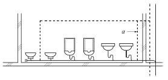
- 도피통기관
- 루프통기관
- 각개통기관
- 결합통기관
(정답률: 71%)
35. 앵글밸브에 관한 설명으로 옳은 것은?
- 유량을 자동적으로 제어한다.
- 유체가 역류하는 것을 방지한다.
- 유량의 미세한 조정이 용이하다.
- 유체의 흐름 방향을 직각으로 변환시킨다.
(정답률: 87%)
36. 배수관에 관한 설명으로 옳지 않은 것은?
- 옥내배수관으로는 연관이 주로 사용된다.
- 배수수평관의 구배는 관경에 영향을 받는다.
- 배수수직관의 관경은 배수의 흐름방향으로 축소하지 않는다.
- 우수배수관의 관경은 최대강우량과 지붕면적 등을 기준으로 산정한다.
(정답률: 74%)
37. 최대 방수구역에 설치된 스프링클러헤드의 개수가 20개인 경우, 스프링클러설비의 수원의 저수량은 최소얼마 이상이 되도록 하여야 하는가? (단, 옥상수조의 저수량은 제외하며, 개방형스프링클러설비를 사용하는 경우)
- 32m3
- 56m3
- 64m3
- 72m3
(정답률: 80%)
38. 2.0m/sec의 속도로 흐르는 물의 속도수도는?
- 0.204m
- 2.04m
- 20.4m
- 204m
(정답률: 67%)
39. 음료용 급수의 오염원인에 따른 방지대책으로 옳지 않은 것은?
- 정체수 : 적정한 탱크 용량으로 설계한다.
- 조류의 증식 : 투광성 재료로 탱크를 제작한다.
- 크로스 커넥션 : 각 계통마다의 배관을 색깔로 구분한다.
- 곤충 등의 침입 : 맨홀 및 오버플로우관의 관리를 철저히 한다.
(정답률: 83%)
40. 탕의 사용상태가 간헐적이며 일시적으로 사용량이 많은 건물에서 급탕설비의 설계 방법으로 가장 알맞은 것은? (단, 중앙식 급탕방식이며 증기를 열원하는 열교환기 사용)
- 저탕용량을 크게 하고 가열능력도 크게 한다.
- 저탕용량을 크게 하고 가열능력은 작게 한다.
- 저탕용량을 작게 하고 가열능력은 크게 한다.
- 저탕용량을 작게 하고 가열능력도 작게 한다.
(정답률: 69%)
3과목: 공기조화설비
41. 냉각탑에서 어프로치(approach)에 관한 설명으로 옳은 것은?
- 냉각탑 출구와 입구 수온의 온도차
- 냉각탑 입구와 출구 공기의 습구온도차
- 냉각탑 입구의 수온과 출구공기의 습구온도차
- 냉각탑 출구의 수온과 입구공기의 습구온도와의 차
(정답률: 61%)
42. 국부저항의 상당길이에 관한 설명으로 옳지 않은 것은?
- 배관의 지름이 커질수록 상당길이는 길어진다.
- 45°표준 엘보보다는 90°표준 엘보의 상당길이가 길다.
- 밸브류의 경우 개폐도(開閉度)가 작을수록 상당길이는 길어진다.
- 동일한 배관 지름, 전개(全開)일 경우 앵글밸브보다 게이트밸브의 상당길이가 길다.
(정답률: 57%)
43. 결로에 관한 설명으로 옳지 않은 것은?
- 결로에는 표면결로와 내부결로가 있다.
- 실내에서 표면결로 방지를 위해 수증기 발생을 억제한다.
- 표면결로를 방지하기 위해서는 공기와의 접촉면을 노점온도 이상으로 유지해야 한다.
- 구조체의 내부결로를 방지하기 위해서는 단열재의 실내측보다는 실외측에 방습막을 설치하는 것이 효과적이다.
(정답률: 79%)
44. 700kW의 터보냉동기에 순환되는 냉수량은? (단, 냉 각기 입구와 출구에서의 냉수온도는 각각 12℃, 7℃이며, 물의 비열은 4.2kJ/kg∙K 이다.)
- 2,000L/min
- 3,000L/min
- 4,000L/min
- 6,000L/min
(정답률: 58%)
45. 공기 2,000kg/h를 증기코일로 가열하는 경우, 코일을 통과하는 공기의 온도차가 25.5℃, 증기온도에서 물의 증발잠열이 2,229.52kJ/kg일 때 가열에 필요한 증기량은? (단, 공기의 정압비열은 1.01kJ/kg∙K 이다.)
- 18.2kg/h
- 23.1kg/h
- 40.2kg/h
- 50.2kg/h
(정답률: 67%)
46. 어떤 실을 대상으로 단일덕트정풍량 방식의 공기조화 시스템을 설치하고자 한다. 실내부하, 외기부화, 재열 부하가 있는 경우 다음 중 냉각코일용량으로 맞는 것은? (단, 덕트로부터의 취득열량은 실내부하에 포함한다.)
- 실내부하
- 실내부하+재열부하
- 실내부하+외기부하
- 실내부하+재열부하+외기부하
(정답률: 83%)
47. 덕트 내의 풍속이 20m/s, 정압이 200Pa 일 경우 전압의 크기는? (단, 공기의 밀도 1.2kg/m3 이다.)
- 212Pa
- 220Pa
- 330Pa
- 440Pa
(정답률: 64%)
48. 냉각탑이 응축기보다 낮은 위치에 있는 경우 냉각수 펌프가 정지할 때마다 응축기 주변이 극단적인 부(-)압아 되지 않도록 설치하는 것은?
- 딥 튜브(deep tube)
- 더트 포켓(dirt pocket)
- 플래시 탱크(flash tank)
- 사이폰 브레이크(syphon breaker)
(정답률: 77%)
49. 증기트랩 중 플로트 트랩에 관한 설명으로 옳지 않은 것은?
- 다량의 응축수를 처리할 수 있다.
- 동결의 우려가 있는 곳에 주로 사용된다.
- 중기해머에 의해 내부손상을 입을 수 있다.
- 자동 에어벤트가 설치되어 있어 공기배출능력이 우수하다.
(정답률: 73%)
50. 배관설계에 관한 설명으로 옳은 것은?
- 직관부의 마찰저항은 관경이 비례한다.
- 글로브밸브는 슬루스밸브에 비해 마찰저항이 적어 지름이 큰 배관에 많이 사용한다.
- 배관 내의 유속이 낮으면 공사비는 절감되나 마찰저항이 커져서 펌프 소요동력이 증가한다.
- 수배관의 관경은 마찰손실선도에서 유량, 단위길이당 마찰손실, 유속 중 2가지 요소가 정해지면 결정할 수 있다.
(정답률: 55%)
51. 다음 중 건물 내 각 실의 부하변동에 따른 개별제어가 가장 곤란한 공조방식은?
- 이중덕트방식
- 단일덕트 변풍량방식
- 단일덕트 정풍량방식
- 단일덕트 터미널 리히트방식
(정답률: 73%)
52. 지역난방에 관한 설명으로 옳지 않은 것은?
- 초기 투자비용이 크다.
- 배관에서의 열손실이 거의 없다.
- 각 건물의 설비면적을 줄이고 유효면적을 넓힐 수 있다.
- 설비의 고도화에 따라 도시의 매연을 경감시킬 수 있다.
(정답률: 82%)
53. 보일러 보급수의 처리방법에 속하지 않는 것은?
- 여과법
- 탈기법
- 비색법
- 경수연화법
(정답률: 70%)
54. 실용적 3,000m3, 재실자 350인의 집회실이 있다. 다음과 같은 조건에서 실내온도를 19℃로 하기 위한 필요 환기량은?
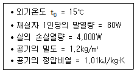
- 2,400m3/h
- 9,950.5m3/h
- 17,821.8m3/h
- 21,600m3/h
(정답률: 55%)
55. 다음은 실내공간에 있어서 인체의 열방출 경로 중 그 비율이 가장 작은 것은?
- 대류
- 복사
- 전도
- 증발
(정답률: 60%)
56. 다음 중 호텔의 객실에 가장 적합한 공조방식은?
- 유닛히터방식
- 각층 유닛방식
- 팬코일 유닛 방식
- 정풍량 단일덕트방식
(정답률: 67%)
57. 펌프의 운전점 결정방법으로 옳은 것은?
- 펌프의 전양정이 최대가 되는 점으로 결정된다.
- 펌프의 양정곡선과 효율곡선의 교점으로 결정된다.
- 펌프의 양정곡선과 저항곡선의 교점으로 결정된다.
- 펌프의 축동력곡선과 효율곡선의 교점으로 결정된다.
(정답률: 55%)
58. 다음 중 에어필터의 효율측정법이 아닌 것은?
- 중량법
- 비색법
- 체적법
- DOP법
(정답률: 71%)
59. 그림과 같은 전열교환기에서 전열효율은?
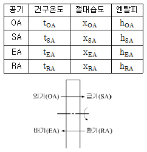
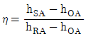
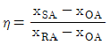
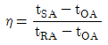
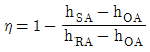
(정답률: 64%)
60. 냉방부하의 종류 중 송풍기 용량 및 송풍량의 산출요인에 속하지 않는 것은?
- 외기부하
- 조명부하
- 인체부하
- 일사부하
(정답률: 50%)
4과목: 소방 및 전기설비
61. 다음 중 속도조정이 가능한 직류 전동기는?
- 동기전동기
- 직권전동기
- 농형유도전동기
- 반발시동유도전동기
(정답률: 57%)
62. 축전지의 충전방식 중 자기 방전량만을 항상 충전하는 방식은?
- 세류충전
- 균등충전
- 부동충전
- 급속충전
(정답률: 74%)
63. 벽면의 상부에 위치하여 모든 빛이 아래 방향의 벽면으로 조명하는 건축화 조명 방식은?
- 루버 조명
- 광천장 조명
- 코니스 조명
- 다운라이트 조명
(정답률: 63%)
64. 엘리베이터 및 에스컬레이터 설비에 관한 설명으로 옳지 않은 것은?
- 에스컬레이터는 연속적으로 다수의 승객을 수송하는 경우 설치한다.
- 엘리베이터는 서비스를 좋게 하기 위하여 건축물의 중심부에 설치한다.
- 대형건물에 3~5대의 엘리베이터가 설치된 경우 군관리 방식을 채용한다.
- 건축물의 출입이 2개 층으로 되는 경우 엘리베이터의 출발층은 각 층별로 설치한다.
(정답률: 62%)
65. 자동화재탐지설비 중 P형 2급 수신기는 몇 회선 이하의 건물에 주로 사용되는가?
- 5회선
- 10회선
- 15회선
- 20회선
(정답률: 39%)
66. 전자유도현상에 의해 발생하는 유도 기전력의 방향에 관계되는 법칙은?
- 쿨롱의 법칙
- 렌쯔의 법칙
- 플레밍의 왼손법칙
- 플레밍의 오른손법칙
(정답률: 60%)
67. 다음 중 도로, 터널, 항만표지, 검사용 조명으로 가장 적당한 광원은?
- BL 램프
- 고압 수은등
- 크세논 램프
- 고압 나트륨등
(정답률: 72%)
68. 다음의 논리식 중 성립하지 않는 것은?
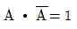
- A∙A=A
- A+0=A
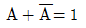
(정답률: 66%)
69. 양측 금속박 사이에 유전체를 끼워 놓아둔 구조로 정전용량을 갖게 한 소자는?
- 저항
- 콘덴서
- 콘덕턴스
- 인덕턴스
(정답률: 79%)
70. 콘덴서만의 회로에서 전압과 전류사이의 위상관계는?
- 전압이 전류보다 45°앞선다.
- 전류가 전압보다 45°앞선다
- 전압이 전류보다 90°앞선다.
- 전류가 전압보다 90°앞선다.
(정답률: 55%)
71. 화재 등과 같은 비상시를 대비하여 건물 내에 설치하는 설비가 아닌 것은?
- 방범설비
- 피난유도설비
- 비상콘센트설비
- 무선통신보조설비
(정답률: 77%)
72. 동심원통형 탱크에 설치된 정전용량 방식 레벨 검출기의 정확한 검출에 영향을 미치지 않는 요소는?
- 탱크의 총 부피
- 내부 전극 반경
- 외부 전극 반경
- 피 측정 물질의 유전율
(정답률: 57%)
73. 대전류 회로의 지락사고 시 각상의 불평형 전류를 검출하기 위한 계기는?
- 영상 변류기(ZCT)
- 계기용 변류기(CT)
- 계기용 변압기(PT)
- 계기용 변압・변류기(MOF)
(정답률: 78%)
74. 다음의 회로에 대한 계산식으로 옳지 않은 것은?
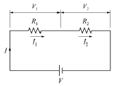
- V=V1+V2
- I=I1+I2
- R=R1+R2
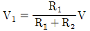
(정답률: 35%)
75. 어떤 회로에서 유효전력 80[W], 무효전력 60[Var]일 때 역률은?
- 70[%]
- 80[%]
- 90[%]
- 100[%]
(정답률: 66%)
76. 다음 중 건축물 내의 간선 배선방식으로 사용되지 않는 공사방법은?
- 버스덕트 공사
- 금속덕트 공사
- 케이블트레이 공사
- 금속몰드배선 공사
(정답률: 61%)
77. 4극, 60[Hz], 50[kW] 3상 유도전동기의 전부하 슬립이 2[%]일 때 전동기의 회전수[rpm]는?
- 1,548
- 1,642
- 1,764
- 1,800
(정답률: 68%)
78. 액면조절장치의 감지부의 종류 중 액체 내의 전극봉 사이의 동전 상태로서 액면을 조절하며, 저수조용으로 사용하는 것은?
- 액면식
- 전극식
- 플로트식
- 오뚜기식
(정답률: 78%)
79. 단상변압기 3대를 △-△ 결선하여 부하에 전력을 공급할 때 △결선의 특징으로 옳지 않은 것은?
- 중성점을 접지할 수 있다.
- 선전류가 상전류보다 √3배 크다.
- 선간전압과 상전압이 크기가 같다.
- 변압기 1대가 고장시 V결선으로 전환할 수 있다.
(정답률: 56%)
80. 전력요금이 kWh당 200원이다. 200[W] TV수상기를 하루 4시간씩 시청하였을 때 1달(30일) 사용료는?
- 2,400원
- 3,600원
- 4,800원
- 8,400원
(정답률: 82%)
5과목: 건축설비관계법규
81. 100세대 이상의 아파트를 신축하는 경우 시간당 최소 몇 회 이상의 환기가 이루어질 수 있도록 자연환기설비 또는 기계환기설비를 설치하여야 하는가?
- 0.5회
- 0.7회
- 1.2회
- 1.5회
(정답률: 85%)
82. 문화 및 집회시설 중 공연장의 개별관람석의 출구를 관람석별로 2개소 이상 설치해야 하는 개별관람석의 바닥면적의 기준은?
- 150m2이상
- 300m2이상
- 450m2 이상
- 600m2 이상
(정답률: 72%)
83. 환기∙난방 또는 냉방시설의 풍도가 방화구획을 관통하는 경우, 그 관통부분 또는 이에 근접한 부분에 설치하는 댐퍼에 관한 기준 내용으로 옳지 않은 것은?
- 철재로서 철판의 두께가 1.5mm 이상일 것
- 닫힌 경우에는 방화에 지장이 있는 틈이 생기지 아니할 것
- 화재가 발생한 경우에는 연기의 발생 또는 온도의 상승에 의하여 자동적으로 닫힐 것
- 한국건설기술연구원장이 국토교통부장관이 정하여 고시하는 기준에 따라 내화충전성능을 인정한 구조로 된것
(정답률: 50%)
84. 교육연구시설 중 학교의 교실 간 경계벽의 차음을 위한 구조로서 적합하지 않은 것은?
- 벽돌조로서 두께가 15cm인 것
- 철근콘크리트조로서 두께가 15cm인 것
- 철골철근콘크리트조로서 두께가 15cm인 것
- 무근콘크리트조로서 시멘트모르타르의 바름 두께를 포함하여 15cm인 것
(정답률: 66%)
85. 다음은 건축법상 건축허가에 관한 기준 내용이다. ( )안에 알맞은 것은?
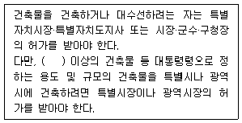
- 6층
- 11층
- 16층
- 21층
(정답률: 77%)
86. 건축물의 에너지절약 설계기준에서는 수영장에 자연 채광을 위한 개구부 설치를 권장하고 있다. 다음 중 권장 개구부 면적의 합계에 관한 기준으로 옳은 것은?
- 수영장 바닥면적의 5분의 1이상
- 수영장 바닥면적의 7분의 1이상
- 수영장 바닥면적의 10분의 1이상
- 수영장 바닥면적의 20분의 1이상
(정답률: 66%)
87. 건축법령상 방송 공동수신설비를 설치하여야 하는 대상 건축물에 속하는 것은?
- 수련시설
- 공동주택
- 노유자시설
- 문화 및 집회시설
(정답률: 77%)
88. 건축물에 가스∙급수∙배수∙환기 등의 건축설비를 설치하는 경우 건축기계설비기술사 또는 공조냉동기계기술사의 협력을 받아야 하는 대상 건축물의 연면적 기준은? (단, 창고시설은 제외)
- 3,000m2
- 5,000m2
- 10,000m2
- 15,000m2
(정답률: 75%)
89. 종교시설의 용도에 쓰는 건축물의 집회실로서 그 바닥면적이 200m2 이상인 경우 반자의 높이는 최소 얼마이상으로 하여야 하는가? (단, 기계환기장치를 설치하지 않는 경우)
- 2.1m
- 2.4m
- 3m
- 4m
(정답률: 70%)
90. 건축물에 설치하는 비상용 승강기의 승강장 바닥면 적은 비상용 승강기 1대에 대하여 최소 얼마 이상으로 하여야 하는가? (단, 옥내에 승강장을 설치하는 경우)
- 3m2 이상
- 6m2 이상
- 9m2 이상
- 12m2 이상
(정답률: 82%)
91. 객석유도등을 설치하여야 하는 특정소방대상물에 속하는 것은?
- 학교
- 전시장
- 종합병원
- 도매시장
(정답률: 73%)
92. 다음의 소방시설 중 경보설비에 속하지 않는 것은?
- 누전경보기
- 통합감시시설
- 무선통신보조설비
- 자동화재속보설비
(정답률: 85%)
93. 건축법령상 다음과 같이 정의되는 것은?
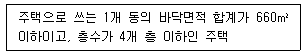
- 연립주택
- 다중주택
- 다세대주택
- 다가구주택
(정답률: 74%)
94. 헬리포트의 설치에 관한 기준 내용으로 옳은 것은?
- 헬리포트의 길이와 너비는 가각 9m 이상으로 한다.
- 헬리포트의 중앙부분에는 지름 6m의“ⓗ”표지를 황색으로 한다.
- 헬리포트의 주위한계선은 백색으로 하되, 그 선의 너비는 38cm로 한다.
- 헬리포트의 중심으로부터 반경 15m 이내에는 이∙착륙에 장애가 되는 건축물∙공작물 또는 난간을 설치하지 아니한다.
(정답률: 78%)
95. 건축허가 등을 할 때 미리 소방본부장 또는 소방서장의 동의를 받아야 하는 대상 건축물의 연면적 기준은? (단, 업무시설의 경우)
- 100m2
- 200m2
- 400m2
- 1,000m2
(정답률: 59%)
96. 건축물의 에너지절약 설계기준에 따른 건축부분의 권장사항으로 옳지 않은 것은?
- 공동주택은 인동간격을 넓게 하여 저층부의 일사 수열량을 증대시킨다.
- 건물의 창과 문은 가능한 작게 설계하고, 특히 열손실이 많은 북측의 창면적은 최소화한다.
- 건축물의 체적에 대한 외피면적의 비 또는 연면적에 대한 외피면적의 비는 가능한 크게 한다.
- 거실의 층고 및 반자 높이는 실의 용도와 기능에 지장을 주지 않는 범위 내에서 가능한 낮게 한다.
(정답률: 79%)
97. 다음은 스프링클러설비를 설치하여야 하는 특정소방대상물에 관한 기준 내용이다. ( )안에 알맞은 것은?
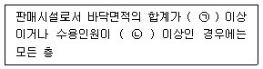
- ㉠ 5,000m2, ㉡ 300명
- ㉠ 5,000m2, ㉡ 500명
- ㉠ 10,000m2, ㉡ 300명
- ㉠ 10,000m2, ㉡ 500명
(정답률: 67%)
98. 건축물에 설치하는 굴뚝에 관한 기준 내용으로 옳지 않은 것은?
- 금속제 굴뚝은 목재 기타 가연재료로부터 10cm이상 떨어져서 설치할 것
- 굴뚝의 옥상돌출부는 지붕면으로부터의 수직 거리를 1m 이상으로 할 것
- 금속제 굴뚝으로서 건축물의 지붕 속에 있는 굴뚝의 부분은 금속 외의 불연재료로 덮을 것
- 굴뚝의 상단으로부터 수평거리 1m 이내에 다른 건축물이 있는 경우에는 그 건축물의 처마 보다 1m 이상 높게 할 것
(정답률: 74%)
99. 건축물의 바깥쪽으로 나가는 출구로 쓰이는 문을 안여닫이로 해도 되는 건축물의 용도는?
- 업무시설
- 장례식장
- 위락시설
- 종교시설
(정답률: 61%)
100. 각 층의 거실면적이 1,000m2인 10층 종합병원에 설치하여야 하는 승용승강기의 최소대수는? (단, 15인승 승강기인 경우)
- 2대
- 3대
- 4대
- 5대
(정답률: 62%)